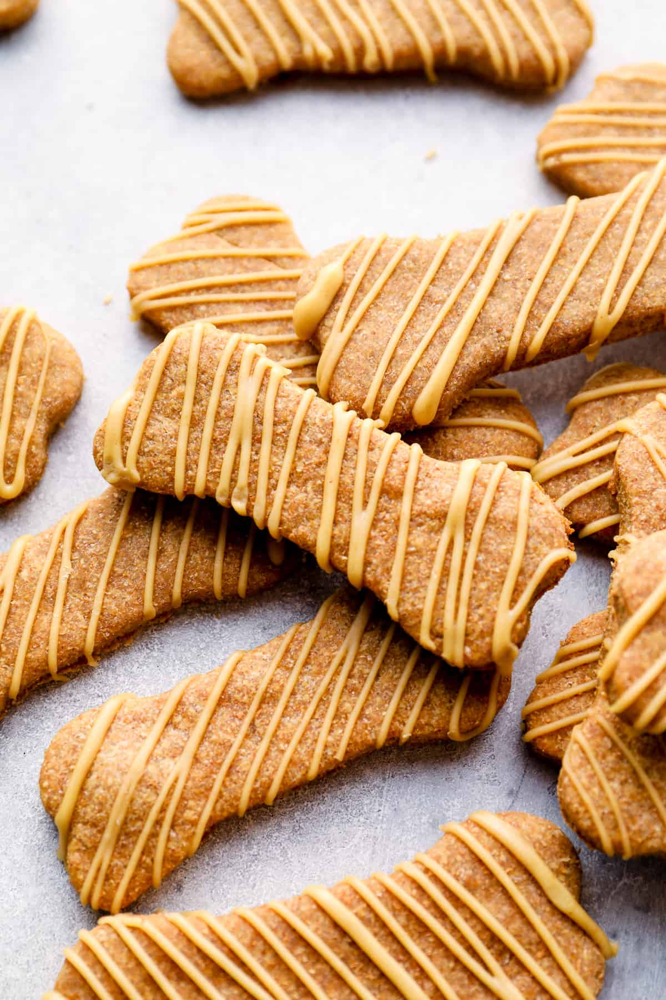
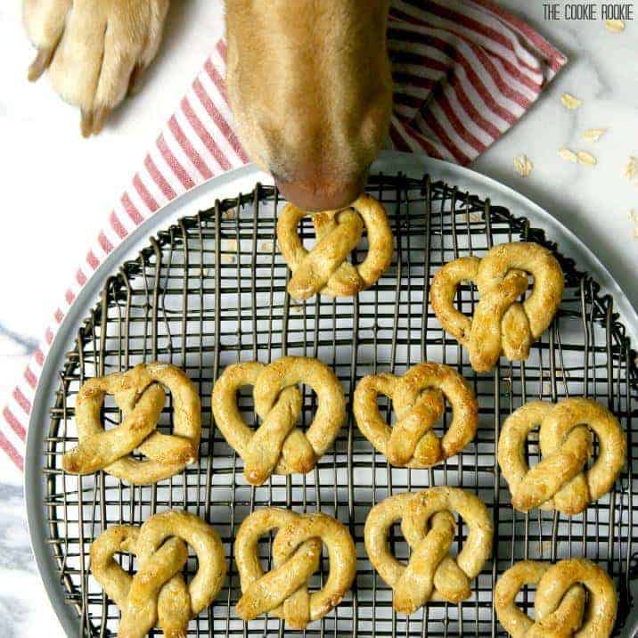
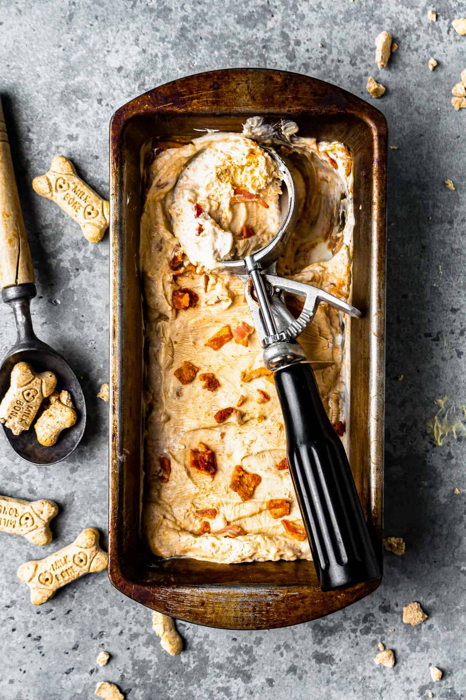

Jetalu Dog Treat Cookbook

Peanut Butter Dog Treat
Homemade Dog Treats are the best way to show your pet that you
love them like family! These Homemade Peanut Butter Dog Treats
are an easy dog biscuit recipe that your fur baby would request
every week if they could.
Homemade Peanut Butter Dog Treats Recipe
Prep: 15 minutes
Cook: 30 minutes
Total: 45 minutes
Serving: 24 treats
Equipment
-
Kitchen Scale (optional)
-
Baking Sheet
-
Rolling Pin
-
Piping Tip Set
Ingredients
For the Dog Treats
-
2½ cups whole wheat flour
-
1 large egg
-
1 cup peanut butter
-
1 cup water
-
2 tablespoons honey
For the Frosting
-
2 tablespoons peanut butter
-
1 tablespoon honey
-
⅓ cup cornstarch
-
3-4 tablespoons hot water
Instructions
-
Preheat oven to 350°F. Line a baking sheet with
parchment paper. Set aside.
-
In a large bowl, combine flour and the egg. Add the peanut
butter, water, and honey, and stir until you have a stiff
dough. The dough becomes very firm and sticky. You may
need to use your hands, or the paddle attachment on your mixer.
2½ cups whole wheat flour,
-
On a lightly floured surface, roll out the dough about
½-inch thick and use a cookie cutter to make fun shapes.
The treats barely spread and rise, so get creative with
your shapes.
-
Bake for 18-20 minutes, until golden. Once done,
set aside to cool. (If you have smaller cookies,
use less time, otherwise the bottom might burn.)
-
To make the frosting, combine the peanut butter and honey
in a microwavable bowl, and heat in the microwave in
15 second increments, stirring in between, until melted.
2 tablespoons peanut butter,
-
Add the melted peanut butter mixture to the cornstarch and
stir until just combined.
-
Slowly add in the water 1 tablespoon at a time until you
have reached the consistency that you would like. For a
thinner frosting, add more water.
3-4 tablespoons hot water
-
Add the frosting to a piping bag and pipe designs on top
of each dog treat.
-
Frost the treats with the peanut butter/honey mixture for
an even more tempting cookie.
How to Store
-
Once fully cooled, I store homemade peanut butter dog
biscuits in an airtight container (very important)
in the refrigerator, for up to 1 month. This recipe makes
24 medium dog cookies, so you’ll have plenty to share
whenever your dog needs a healthy treat.

Oat and Apple Dog Pretzels
These oat and apple dog pretzels are super simple to make with just
4 ingredients, and the pretzel shape is ridiculously cute!
Oat and Apple Dog Pretzels Recipe
Prep: 20 minutes
Cook: 30 minutes
Total: 50 minutes
Serving: 15 treats
Equipment
-
Kitchen Scale (optional)
-
Baking Sheet
Ingredients
-
1 large egg
-
1 cup unsweetened applesauce
-
2 cups gluten-free oat flour
-
¾ cup gluten-free old-fashioned rolled oats
Instructions
-
Preheat oven to 350°F. Line a baking sheet with parchment
paper and set aside.
-
Using a hand whisk, beat the egg and set it aside.
-
Combine the applesauce, oat flour, and rolled oats in a
large bowl. Pour all but 1 tablespoon of the egg over
the mixture and set aside the remaining 1 tablespoon of egg.
1 cup unsweetened applesauce,
2 cups gluten-free oat flour,
¾ cup gluten-free old-fashioned rolled oats
-
Using a wooden spoon, stir the mixture until a dough forms.
The dough should be tacky but not overly sticky. Add a bit
more or less flour if necessary.
-
Take a 2-tablespoon-sized piece of dough (approximate) and
roll it into a tube. It should be about 10 inches long and
about the width of a pencil.
-
Take each tube and make into a U shape, then twist the ends
together and fold back to the top. This makes the pretzel
shape. Pinch the ends in to make sure they’re secure.
-
Place the pretzels onto the baking tray. Brush the top of
each pretzel with the remaining egg.
-
Bake for approximately 25-30 minutes, until they're slightly
browned and become crispy. The pretzels should be pretty
hard, just like pups love them!
-
Remove from the oven and allow to cool before serving.
How to Store
-
These oat and apple dog pretzels will keep well for up to 2
weeks. Let them cool completely and keep them stored at
room temperature in an airtight container to keep them fresh.
Preferably place them in a high cupboard where inquisitive
noses can’t reach!

Peanut Butter Bacon Puppy Ice Cream
Dog ice cream is the perfect treat for your furry friend! When
the weather gets hot, treat your puppy to some homemade puppy
ice cream so they don't feel left out. This easy recipe has all
the right ingredients (peanut butter, yogurt, and bacon), so
they can enjoy their own bowl instead of watching you eat yours!
Peanut Butter Bacon Puppy Ice Cream Recipe
Prep: 10 minutes
Cook: 30 minutes
Total: 40 minutes
Serving: 8 treats
Equipment
Ingredients
-
8 ounces creamy peanut butter
-
8 ounces plain yogurt
-
¼ cup cooked bacon bits
Instructions
-
Mix together the peanut butter, yogurt, and optional bacon bits.
8 ounces creamy peanut butter,
-
Freeze until firm.
-
Serve to your dog in ¼-1 cup increments, based on your dog's
size and weight.
How to Store
-
This ice cream lasts up to 8 weeks in the freezer.
So make a big batch and save it, so your furry friends
can enjoy this treat for a long time.